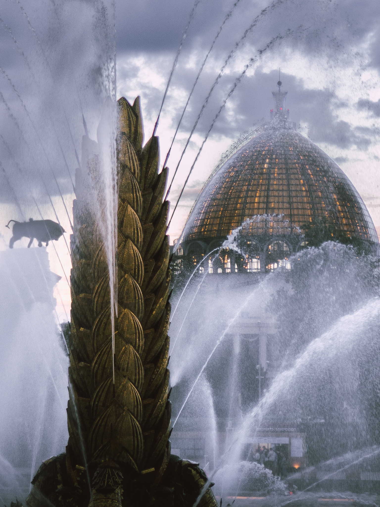

08 / 15 — SERIES №3: ATMOSPHERE & HERITAGE
ВДНХ. Фонтан.
Атмосфера.
Сложная динамика водного потока на фоне монументальной купольной архитектуры ВДНХ. Контраст летящих брызг и статичного величия наследия ушедшей эпохи. Уникальная оптика исследователя городской среды превращает масштабное монументальное здание в чистый интерьерный арт-объект. Лимитированный тираж предпечатной подготовки под премиальный крупный формат.
Доступные форматы исполнения: